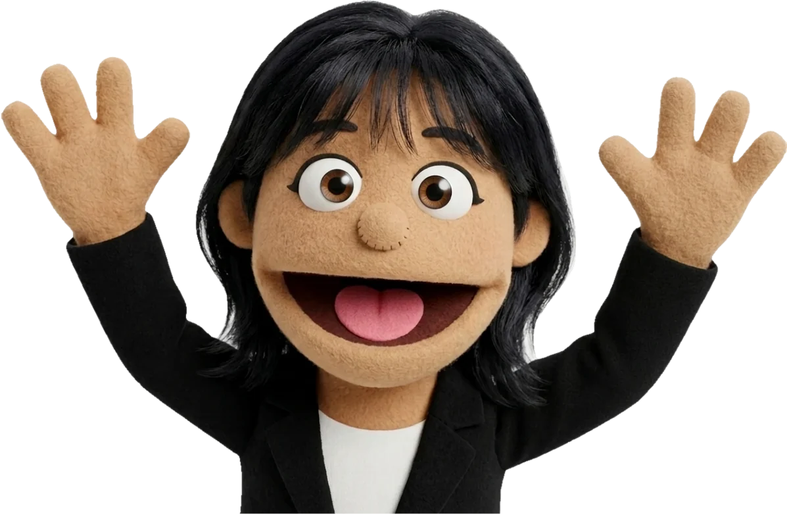

두 요청은 들어온 순서대로 반영됩니다
쿠팡이 회수 요청을 보내고, 이후 고객이 취소하면 회수 취소가 이어서 들어옵니다. 사내 연계 서버는 두 요청을 받아 같은 회수 대상 데이터에 순서대로 반영합니다.
현업의 불편을 발견하고, 데이터와 시스템의 흐름을 따라 원인을 찾으며, 같은 문제가 반복되지 않는 구조로 바꾸는 개발자 이유정입니다.

학교에서 시작해, 시스템이 실제로 돌아가는 현장까지
자료구조, 알고리즘, 운영체제, 네트워크 등 전공 과목을 수강하며 CS 기본기를 쌓았습니다.
제가 마주한 문제와 판단의 기록입니다.
WMS를 개발·운영하며 ERP와 OMS에서 넘어온 주문이 재고와 물류 처리로 이어지고, 그 결과가 다시 ERP로 돌아가는 과정을 경험했습니다. 하나의 기능보다 여러 시스템이 데이터를 주고받으며 실제 업무 흐름을 완성하는 일에 흥미를 느꼈습니다.
현대오토에버는 완성차와 그룹사의 다양한 업무 시스템을 구축·운영하며 시스템 간 연계를 설계하고 고도화합니다. 주문, 판매, 물류, 고객 서비스가 하나의 사업 흐름으로 이어지는 곳에서 이 경험을 더 큰 규모로 넓히고 싶습니다.
Java·Spring 개발 역량과 완성차 업무 도메인을 빠르게 익혀, 안정적인 기능 개발과 운영을 맡겠습니다.
시스템 간 인터페이스와 데이터 흐름, 성능과 운영 안정성까지 고려하며 시스템 고도화를 주도하겠습니다.
여러 그룹사의 공통·개별 요구를 함께 고려한 차세대 시스템 구축과 시스템의 글로벌 확산을 이끌겠습니다.
저의 경험이 한 번의 문제 해결로 끝나지 않고, 다음 시스템을 더 잘 만드는 자산이 되게 하겠습니다.
외부 요청이 들어온 순서와 내부 데이터가 바뀐 순서가 어긋나는 문제를, 동시성 제어로 해결한 기록입니다.
퍼시스그룹 가구를 쿠팡에서 판매하기 위해 쿠팡 OMS와 사내 OMS·WMS를 연계했습니다. 저는 쿠팡이 보내는 회수 요청과 회수 취소를 받아, 사내 시스템의 어떤 상태와 로직으로 처리할지 분석하고 수신 이후의 처리 로직을 설계·구현했습니다.
쿠팡이 회수 요청을 보내고, 이후 고객이 취소하면 회수 취소가 이어서 들어옵니다. 사내 연계 서버는 두 요청을 받아 같은 회수 대상 데이터에 순서대로 반영합니다.
모든 API는 정상 응답했습니다. 그런데 쿠팡이 보낸 순서와 내부에 반영된 순서가 달라져 상태가 어긋났습니다. 호출 성공 여부만 보면 찾을 수 없는 문제였습니다.
두 요청은 동일한 데이터를 변경합니다. 그래서 재시도나 예외 처리를 더하는 것보다, 앞선 요청이 끝나기 전에 뒤의 요청이 같은 데이터를 바꾸지 못하게 하는 것이 핵심이라고 판단했습니다.
회수 요청을 처리하는 동안 대상 데이터를 잠그고, 회수 취소는 처리가 끝난 뒤에 반영되도록 했습니다. 처리 지연이 생겨도 쿠팡이 보낸 순서대로 상태가 바뀝니다.
인터페이스를 볼 때 Request/Response보다 먼저, 이 요청이 내부 상태를 어떻게 바꾸는가를 확인하게 됐습니다.
정상 흐름만이 아니라 요청 처리 순서와 데이터 정합성까지 설계 범위에 넣는 것. 외부 시스템과 연결되는 기능을 만들 때 가장 먼저 확인하는 기준이 됐습니다.
사용자 입력, 공공 API, 내부 DB가 같은 장소를 서로 다른 주소로 표현하던 문제를, 위경도라는 공통 기준으로 해결한 기록입니다.
사용자가 주소를 입력하면 DB에서 매물 정보와 매매가를 찾아 깡통전세 위험 점수를 계산하고, 공공 API로 받은 건축물 정보로 위반 건축물 여부를 판정해 하나의 리포트로 보여주는 기능입니다. 저는 이 안심 리포트 기능을 프론트부터 백엔드까지 맡았습니다.
사용자가 고른 주소로 DB의 매물을 찾아야 점수 계산과 건축물 조회가 이어집니다. 그래서 입력 주소와 DB 주소가 1:1로 매핑되는 것이 전체 기능의 전제였습니다.
사용자 입력, 주소 검색 API, 내부 DB가 같은 장소를 서로 다른 형식의 문자열로 표현했습니다. 문자열을 그대로 비교하니 매물을 찾지 못하는 경우가 생겼습니다.
처음에는 주소 문자열을 정규화했지만, 새로운 표현이 나올 때마다 예외 규칙을 더해야 했습니다. 문제는 정리 규칙이 아니라 시스템마다 같은 장소를 다른 기준으로 표현한다는 것이라고 판단했습니다.
네이버 Geocoding으로 입력 주소를 위경도로 바꾸고, DB에도 매물을 저장할 때 위경도로 변환해 넣었습니다. 서버는 좌표끼리 1:1로 매핑합니다. 교육 환경상 MySQL만 쓸 수 있어 외부 API로 좌표를 받는 방식을 택했고, 변환에 실패하면 지역을 단계별로 고르는 대체 경로도 만들었습니다.
예외를 하나씩 처리하기보다, 여러 시스템이 함께 쓸 수 있는 기준이 무엇인지 먼저 고민하게 됐습니다.
외부 데이터와 내부 데이터를 연결할 때, 값을 맞추는 규칙보다 두 시스템이 공유할 수 있는 식별 기준을 먼저 찾습니다.
현업 인터뷰로 문제를 다시 정의하고, 실적 조회용 데이터 구조를 새로 설계해 조회 시간을 5초에서 743ms로 줄인 기록입니다.
권역장은 여러 배송·시공팀의 처리율, 시간 준수, 미결 건을 관리합니다. 저는 요구사항 분석부터 테이블 설계, 화면과 API 개발까지 혼자 맡았고, 개발한 시스템은 현업에 도입되어 실제 운영에 쓰였습니다.
요청은 한 문장이었습니다. 어떤 화면을 원하는지 받아 적기 전에, 지금 관리가 왜 어려운지를 먼저 확인하기로 했습니다.
인터뷰에서 세 가지 불편이 나왔습니다. 필요한 것은 지표를 보여주는 화면 하나가 아니라, 이상을 바로 알아채고 대응할 수 있는 관리 구조라고 다시 정의했습니다.
실적을 볼 때마다 배송 이력 전체에서 다시 찾아 계산했고, 일자별로 쿼리가 나뉘어 있었습니다. 조회에 약 5초가 걸려 실시간으로 보고 판단하기 어려웠습니다.
실적 조회용 테이블을 새로 설계하고, 일자별로 나뉜 7개 쿼리를 하나의 집계 쿼리로 합쳤습니다. 응답 시간이 743ms로 줄어 실시간 실적, 미결 사유, 배송팀별 상세, 권역 비교를 만들 수 있었습니다.
"시공팀 업무를 관리하고 싶다"
→ 지표가 아니라 관리 구조의 문제
요구사항을 그대로 구현하기보다, 사용자가 왜 그 기능을 필요로 하는지 먼저 확인하게 됐습니다.
느린 화면을 고칠 때도 화면 코드보다 데이터가 어떤 구조로 조회되는지를 먼저 봅니다. 요구사항 정의와 데이터 구조 설계가 같은 문제의 앞뒤라는 걸 배웠습니다.
레거시 Nexacro 화면을 React·Spring으로 옮기는 반복 작업을, 단계별 Agent와 검증 장치로 나눠 자동화한 기록입니다.
택배시스템의 Nexacro 화면을 웹으로 옮기려면 사람이 화면과 소스를 하나씩 분석해 새 구조로 옮겨야 했습니다. 저는 이 과정에 AI를 단순 보조 도구로 쓰는 데 그치지 않고, 전환 과정 자체를 자동화하는 방식을 시도했습니다.
결과물에서 Controller가 빠지고 Dataset 연결이 누락되는 등 품질이 낮았습니다. 프롬프트를 계속 고칠 수도 있었지만, 원인부터 찾기로 했습니다.
AI가 방대한 XFDL을 읽으면서 동시에 코드를 쓰다 보니 앞부분의 정보를 놓쳤습니다. 문제는 프롬프트 품질이 아니라 분석과 구현을 한 번에 하는 작업 구조라고 판단했습니다.
먼저 기존 화면을 9개 항목으로 구조화한 분석 문서를 만들고, 이후 작업을 분석 · SQL 이식 · 백엔드 · 프론트엔드 · 검증 단계로 나눠 각 Agent가 맡도록 했습니다.
규칙을 어기면 실행을 막는 Guard를 두고, 실제 Build로 다시 검증했습니다. 잘못된 코드를 일부러 넣어 Guard가 막는지도 확인했습니다. 검증 도구는 통과시켰지만 Build에서 Type Error 2건이 나오면서, 검증 도구 자체도 검증해야 한다는 기준을 세웠습니다.
도구가 바뀌어도 개발자의 역할은 실패 가능성을 예측하고 검증 가능한 구조를 만드는 것이라고 배웠습니다.
전환된 택배시스템은 현재 현업에서 실제로 사용 중입니다. AI Agent 기반 자동 마이그레이션 환경 구축으로 사내 IT 본부 사례 공유를 통해 개발자의 일하는 방식에 변화를 주었습니다.